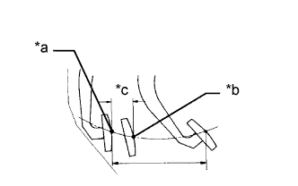

ГЛАВНЫЙ ЦИЛИНДР СЦЕПЛЕНИЯ (для моделей с левосторонним рулевым управлением) > УСТАНОВКА |
| 1. УСТАНОВИТЕ ГЛАВНЫЙ ЦИЛИНДР СЦЕПЛЕНИЯ В СБОРЕ |
Установите главный цилиндр сцепления и закрепите его 2 болтами.
Нанесите на рабочие поверхности трения штифта и втулки вилки универсальную консистентную смазку.
| *1 | Универсальная консистентная смазка |
Подсоедините вилку к педали сцепления с помощью штифта.
Закрепите штифт новым зажимом.
Установите пусковой переключатель муфты сцепления и закрепите его гайкой.
С помощью разрезной головки подсоедините гибкий трубопровод.
Подсоедините патрубок бачка главного цилиндра сцепления.
| *1 | Метка, нанесенная краской |
 | Верх |
 | Левая сторона |
 | Задняя сторона |
| 2. УСТАНОВИТЕ ПЕДАЛЬ СЦЕПЛЕНИЯ С ГЛАВНЫМ ЦИЛИНДРОМ СЦЕПЛЕНИЯ |
Установите педаль сцепления с главным цилиндром сцепления на автомобиль и закрепите их 2 гайками и болтом.
Для моделей с системой круиз-контроля:
Подсоедините разъем переключателя муфты сцепления.
Подсоедините разъем пускового переключателя муфты сцепления.
| 3. УСТАНОВИТЕ РАСПРЕДЕЛИТЕЛЬНЫЙ БЛОК СО СТОРОНЫ ВОДИТЕЛЯ В СБОРЕ |
Установите распределительный блок со стороны водителя (Нажмите здесь).
| 4. ПОДСОЕДИНИТЕ ТРУБОПРОВОД ОТ ГЛАВНОГО ЦИЛИНДРА СЦЕПЛЕНИЯ К ГИБКОМУ ШЛАНГУ |
С помощью разрезной головки подсоедините трубопровод гибкого шланга.
| 5. ПОДСОЕДИНИТЕ ПАТРУБОК БАЧКА ГЛАВНОГО ЦИЛИНДРА СЦЕПЛЕНИЯ |
Подсоедините патрубок бачка главного цилиндра сцепления.
| Верх |
| Левая сторона |
| 6. ЗАЛЕЙТЕ ТОРМОЗНУЮ ЖИДКОСТЬ В БАЧОК |
 |
Залейте тормозную жидкость в бачок.
| *A | Для моделей с левосторонним рулевым управлением (для моделей с 2TR-FE, 5L-E) |
| *B | Для моделей с левосторонним рулевым управлением (с 1GR-FE, 1KD-FTV) |
| *C | Для моделей с правосторонним рулевым управлением |
| 7. ВЫПУСТИТЕ ВОЗДУХ ИЗ ТРУБОПРОВОДА ПРИВОДА СЦЕПЛЕНИЯ |
Снимите колпачок прокачного штуцера рабочего цилиндра сцепления.
Подсоедините виниловую трубку к прокачному штуцеру (штуцеру для удаления воздуха).
Несколько раз нажмите педаль сцепления, а затем ослабьте прокачной штуцер при нажатой педали.
Когда жидкость прекратит вытекать, заверните прокачной штуцер и отпустите педаль сцепления.
Повторяйте 2 описанных выше операции до тех пор, пока из жидкости не будет удален весь воздух.
Затяните прокачной штуцер.
Установите колпачок прокачного штуцера.
Проверьте, чтобы из трубопровода системы сцепления был удален весь воздух.
| 8. ПРОВЕРЬТЕ УРОВЕНЬ ЖИДКОСТИ В БАЧКЕ |
Проверьте уровень жидкости.
Если уровень тормозной жидкости мал, проверьте наличие утечек и тормозные колодки дискового тормоза. При необходимости долейте тормозную жидкость в бачок после замены или ремонта.
| 9. ПРОВЕРЬТЕ, НЕТ ЛИ УТЕЧЕК ТОРМОЗНОЙ ЖИДКОСТИ ИЗ ТРУБОПРОВОДА ПРИВОДА СЦЕПЛЕНИЯ |
| 10. ПРОВЕРЬТЕ И ОТРЕГУЛИРУЙТЕ ПЕДАЛЬ СЦЕПЛЕНИЯ В СБОРЕ |
Отогните напольный коврик.
 |
Проверьте высоту педали.
| *a | Точка регулировки высоты педали |
| *b | Точка регулировки люфта штока и свободного хода |
| *c | Высота педали |
Отрегулируйте высоту педали.
Для моделей с системой круиз-контроля:
Ослабьте контргайку и, поворачивая переключатель муфты, отрегулируйте высоту. Затяните контргайку.
Для моделей без системы круиз-контроля:
Ослабьте контргайку и, поворачивая ограничительный болт педали сцепления, отрегулируйте высоту. Затяните контргайку.
 |
Проверьте люфты педали и штока.
| *a | Свободный ход педали тормоза |
| *b | Люфт штока |
Нажимайте на педаль до тех пор, пока не почувствуете сопротивление.
Измерьте расстояние между положением педали в свободном состоянии и ее положением в предыдущем шаге.
Отпустите педаль. Осторожно нажмите пальцем на педаль, пока не почувствуете слабое увеличение сопротивления.
Измерьте расстояние между положением педали в свободном состоянии и ее положением в предыдущем шаге.
Отрегулируйте свободный ход педали и люфт штока.
Ослабьте контргайку и, вращая шток, отрегулируйте люфты педали и штока так, чтобы они находились в заданных диапазонах.
Затяните контргайку.
Проверьте высоту педали.
|  |
Проверьте точку выключения сцепления.
| *a | Конечное положение полного хода |
| *b | Положение расцепления |
| *c | 25 мм или более |
Затяните рычаг стояночного тормоза и стабилизируйте автомобиль, установив под колеса колодки.
Запустите двигатель на холостом ходу.
Не нажимая педаль сцепления, медленно установите рычаг переключения передач в положение R до приведения шестерен в контакт.
Плавно нажмите педаль сцепления и измерьте длину хода от точки, в которой прекратился шум шестерен (точка выключения), до положения конца хода.